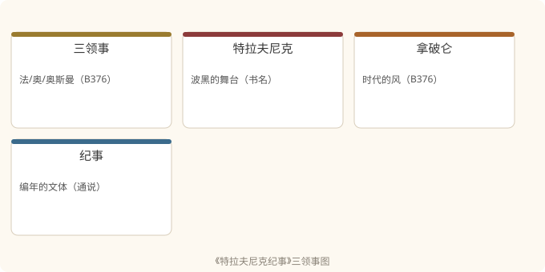

特拉夫尼克纪事
一、基本信息
| 作者 | 伊沃·安德里奇 |
|---|---|
| 成书/出版 | 1945年（Britannica B376：Travnička hronika (1945; Bosnian Story)） Ivo Andric — Encyclopaedia Britannica（百科全书） |
| 国别/地区 | 南斯拉夫 |
| 时代 | 近代 · 20世纪40年代 |
| 体裁 | 长篇小说 |
| 语言 | 塞尔维亚-克罗地亚语 |

《特拉夫尼克纪事》三领事图（主题·结构图）
二、创作背景
Britannica（B376）：Travnička hronika——'shows Bosnia through French, Austrian, and Ottoman consuls in Travnik during Napoleon's era'（拿破仑时代特拉夫尼克的三领事视角）。
Britannica（B376）：'language of great beauty and purity'。
题材（通说待核）：法/奥/奥斯曼三领事的波斯尼亚博弈。
三、内容脉络
（通说待核）三领事视角的'纪事'：达维勒与外交的迷局。
（通说待核）'纪事'体与波斯尼亚的耐心。
四、主要人物表
| 人物 | 身份 | 说明 |
|---|---|---|
| 达维勒 | 法国领事 | （通说待核，B376未载） |
五、主题与艺术特点
- 三帝国的外交博弈（B376）。
- '纪事'的文体（书名语境——通说待核）。
- 波斯尼亚的'耐心'（通说待核）。
六、影响与评论
- Britannica：与《德里纳河上的桥》同年（1945——B376）。
Ivo Andric — Encyclopaedia Britannica（百科全书） - Britannica：1961诺奖（B376 交叉）。
Ivo Andric — Encyclopaedia Britannica（百科全书）
七、阅读建议
难点
- 拿破仑时代外交史。
- '纪事'的编年腔。
- 《特拉夫尼克纪事》中译名（《波斯尼亚故事》）待核。
- 塞尔维亚-克罗地亚语原版。
安德里奇第二作；与《德里纳河上的桥》对读。
八、待核实
- 达维勒人名核对（通说）。
- 1945年出版细节待核。
- '三领事'细节待核。